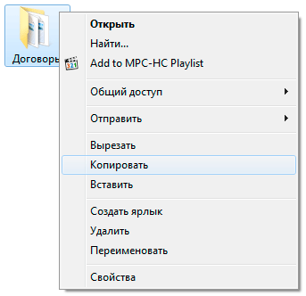
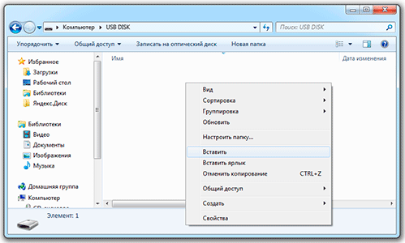
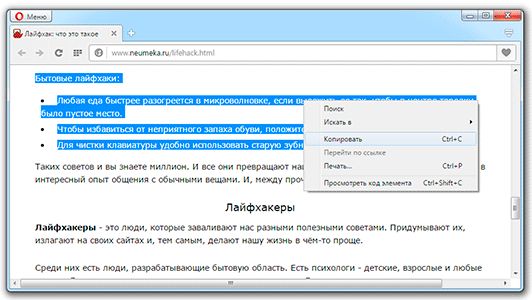
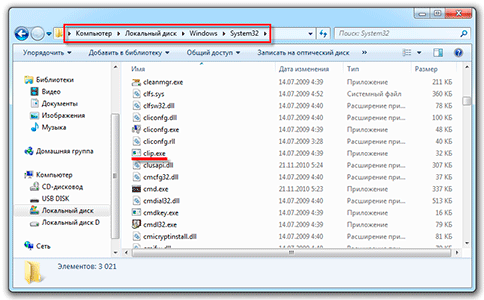

Буфер обмена
В этом уроке я расскажу, что такое буфер обмена, где он находится и как его открыть в Windows.
Буфер обмена — это часть оперативной памяти стационарного компьютера или ноутбука, а также телефона или планшета (Android, iOS). В этот раздел временно сохраняется то, что мы копируем. Информация, которая в нем находится, пользователю не видна.
Объясню на примере ПК с системой Windows. Допустим, у меня на Рабочем столе есть папка, которую нужно переписать на флешку. Значит, щелкаю по ней правой кнопкой мыши и выбираю пункт «Копировать». Вроде как ничего не изменилось, всё осталось по-прежнему. Но эта папка сохранилась в невидимой памяти, и сейчас компьютер держит ее в «уме» — в буфере обмена.
Теперь я открываю свою флешку и вставляю в нее скопированную папку: щелкаю правой кнопкой мыши по пустому месту и выбираю «Вставить».
Папка с Рабочего стола добавляется на флешку.
Вот так это и работает. Мы копируем какую-то информацию и тем самым добавляем ее в буфер обмена, а потом вставляем (вытаскиваем оттуда).
Как долго там хранится информация
Хранится она там до тех пор, пока не будет заменена новой. Или до выключения (перезагрузки) компьютера.
Объясню на примере. Допустим, я в интернете прочел интересную заметку. Она мне так сильно понравилась, что я захотел ее сохранить у себя на компьютере. Дело это нехитрое: нужно выделить текст, скопировать, вставить в файл и сохранить.
Кстати, об этом у меня на сайте есть отдельный урок.
Значит, я выделяю нужный мне кусочек текста и копирую его.
Как вы уже знаете, он сразу же попадает в буфер обмена и будет там находиться до тех пор, пока я его куда-то не вставлю. Но, допустим, я отвлёкся на другую статью. И в ней нахожу что-то, что тоже хотел бы сохранить на свой компьютер. Так вот если я выделю и скопирую эту новую часть, то тот текст, который был скопирован до этого, сотрется. Он заменится новым фрагментом. И при вставке добавится только новый текст.
Кроме того, буфер обмена полностью очищается при выключении и повторном включении компьютера. То есть если я, например, решу прогуляться и перед этим выключу компьютер, то всё, что копировалось, но не было вставлено — удалится. А, значит, включить, войти и извлечь информацию не удастся.
Буфер обмена — временное и очень ненадежное хранилище. Если уж вы скопировали какую-то информацию, то не забудьте ее сразу же вставить.
Не зря под понятием «копирование» подразумевают и вставку тоже. То есть имеют в виду не одно, а сразу два действия. Ведь при копировании данные попадают в промежуточное место, откуда должны быть непременно вставлены. Иначе они не сохраняются, а удаляются.
Где находится буфер обмена
Где искать буфер обмена? У него есть вполне реальное место в компьютере: Локальный диск C — Windows — system32 — файл clip.exe
Но в Windows 7, 8 и 10 этот файл не открывается. То есть вызвать его и посмотреть, что там находится, невозможно. А вот в Windows XP он называется clipbrd.exe и найти его таки можно. И если предварительно скопировать какой-нибудь текст, то он будет внутри этого файла.
Это системный файл. Его нельзя удалить, переместить или переименовать.
Как очистить
Если вы копируете текстовые фрагменты или небольшие файлы, тогда особого смысла в его очистке нет. Однако при копировании больших объектов (например, фильмов) Виндовс может начать притормаживать. Ведь вся информация должна попасть во временное хранилище, которое находится на системном Локальном диске. И даже после вставки она по-прежнему будет «сидеть» в буферной памяти.
Но это легко поправить: просто скопируйте какой-нибудь небольшой файл, например, фотографию или документ Ворда. Или сделайте скриншот (снимок экрана) — для этого нажмите кнопку Print Screen на клавиатуре. Тогда все, что до этого было в буфере, сотрется и туда добавятся новые данные.
Программы для работы с буфером обмена
Ежедневно общаться с буфером обмена через «копировать — вставить» не каждому удобно. Подчас необходима история действий, повторное использование данных, их восстановление или вставка текста без форматирования. Есть немало средств для облегчения работы, о них сейчас и скажу.
Clipdiary
Clipdiary — легкий, быстрый и бесплатный менеджер буфера обмена. Благодаря этой программе вам не придется многократно копировать одну и ту же информацию и файлы. По нажатию на горячую клавишу появляется окно программы со всеми данными, которые вы когда-либо копировали.
Clipdiary я пользуюсь уже много лет, и это — одна из незаменимых утилит для меня. Даже сейчас, чтобы написать этот пост, я каждые полминуты использую Clipdiary. А уже через пару дней после первого знакомства с программой у меня появилась лицензия на нее.
Copy Contents
Copy Contents — маленькая утилита, после установки которой вы сможете скопировать содержимое файлов через контекстное меню.
Утилита поддерживает текстовые файлы в формате txt и файлы изображений в форматах jpg, pcx, png, bmp, tga, gif, tif.
Greenshot
Скриншот можно сделать нажатием Prt Scr, а можно нажатием Prt Scr с программой Greenshot. Мне эта утилита очень нравится тем, что она позволяет задать действия, которые будут выполнены после снятия скриншота.
Я настроил сохранение скриншота на диск, открытие в приложении Paint.net и копирование в буфер обмена. Таким образом, я получаю копию скриншота на диске, могу быстро отредактировать его. Если редактуры не требуется, я сразу же его вставляю в пункт назначения.
PhraseExpress
PhraseExpress — мощнейшая утилита для автонабора текста и выполнения различных макросов. Она позволяет в разы сократить время написания текстов.
Сама по себе утилита может послужить аналогом Clipdiary, так как у нее есть точно такая же функциональность слежения за буфером обмена. Кроме этого, вы можете создать множество макросов с использованием буфера. Например, я могу вставить путь к файлу в зависимости от заголовка окна.
Pushbullet
Pushbullet — кроссплатформенная утилита для синхронизации Push-уведомлений между всеми устройствами. Одна из её фишек — синхронизация буфера обмена. Все, что вы скопировали на одном устройстве, тут же становится доступно на всех остальных.
Punto Switcher
Punto Switcher славится тем, что она позволяет менять раскладку клавиатуры «на лету». Однако, многие её пользователи хорошо знакомы с функцией дневника, в который можно сохранять все тексты, введенные с клавиатуры, а так же весь буфер обмена. Или вы можете быстро изменить раскладку текста в буфере.
TeraCopy
TeraCopy — менеджер копирования файлов. Программа копирует быстрее стандартного менеджера Windows, плюс в ней встроена проверка на целостность файлов после копирования. Еще у вас появляется возможность практически в один клик копировать файлы в часто используемые папки. Для этого просто добавьте их в избранные.
Tynt
Tynt — инструмент веб-аналитики для издателей и SEO. Сервис позволяет отслеживать скопированный контент вашего сайта и ключевые слова. Как это относится к буферу обмена? Очень просто. Посетители постоянно делятся контентом сайта. Если им понравилась какая-то статья или картинка, они обязательно захотят этим поделиться.
Для того, чтобы посетителям было удобнее, веб-разработчики встраивают кнопки «Поделиться» к себе на сайт. При этом никто не задумывается, что люди иногда делятся какой-то частью контента: цитатой или картинкой. Они выделяют текст, копируют его и отсылают своим друзьям в ЛС во «ВКонтакте» или ещё куда-то. Tynt служит для отслеживания именно такого контента.
Какими клавишами можно скопировать текст
Копирование и вставку можно делать не только через правую кнопку мыши. Для этого служит и сочетание клавиш клавиатуры Ctrl + С и Ctrl + V.
Принцип следующий: выделяем то, что нужно скопировать, зажимаем клавишу Ctrl и затем нажимаем на клавишу С. Переходим туда, куда эту информацию нужно поместить, зажимаем Ctrl и V (русскую М).